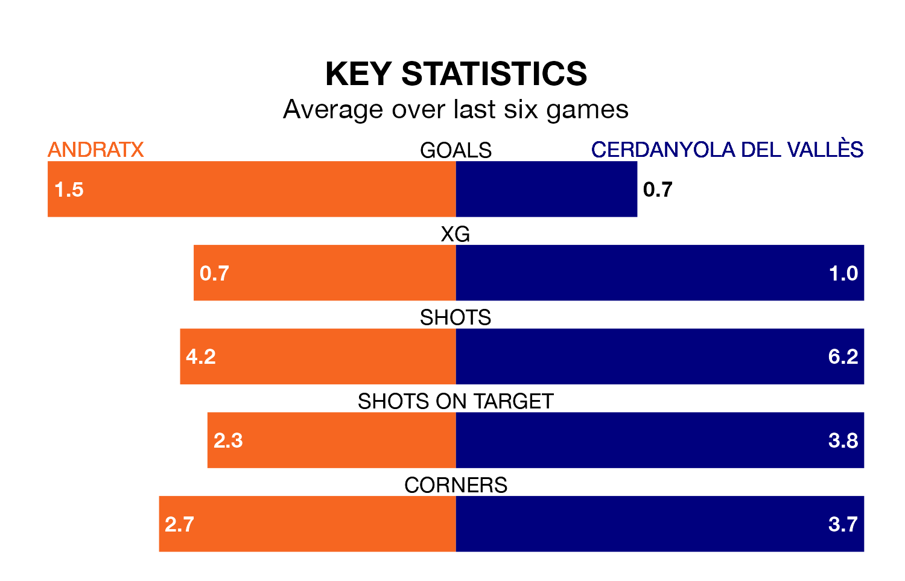

Struggling Cerdanyola del Vallès face Andratx away at the Estadio Sa Plana on Sunday looking to build on a win in their last league outing.
After securing all three points with a 2-1 victory over UE Sant Andreu on January 21, Cerdanyola del Vallès sit 16th in Segunda División RFEF Group 3.
They travel to play an Andratx side 11th in the standings, who lost in their last match, 2-1 against Penya Independent, on January 20.
Andratx are in mixed form in Segunda División RFEF Group 3, with two wins and two draws from their last six games.
With a win and a draw over that period, Cerdanyola del Vallès's form is worse – they have taken four points from 18, compared to the home side's eight.
With 21 goals in 19 games so far this season, Andratx are scoring at below the league average rate with 1.1 goals per game. And they are conceding more than average, letting in 24 goals at a rate of 1.3 per game.
The visitors, meanwhile, are average scorers, with 1.2 goals per game. They have conceded 1.5 goals per game.
In the last three years, Andratx and Cerdanyola del Vallès have played each other on three occasions. Andratx won one of them and they drew the other.
Their last meeting was on September 17, when Andratx won 2-1 away.
Updated: 09:18 (UTC), 23/01/24